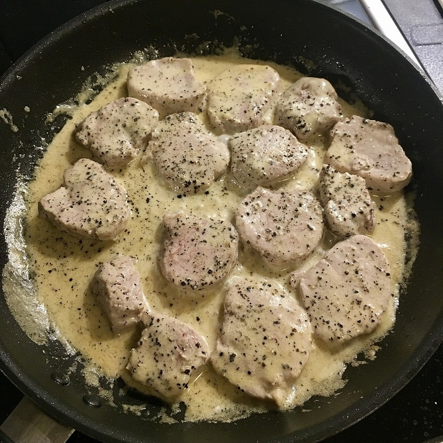

Ingredients
- 1 pork tenderloin
- salt, pepper
- 1 tablespoon of dried thyme
- 1/2 teaspoon of sweet pepper
- 2 tablespoons of extra olive oil
- 1 medium onion
- 2 cloves of garlic
- 30 ml of whiskey
- 120ml broth
- 120ml cream 30%+
- spoon of chopped parsley
Instructions
- Cut the tenderloin into 2 cm slices. Gently smash with a pestle, season with salt, pepper, thyme and paprika. Then rub with a spoonful of olive oil. It is best to leave it for a few hours until marinating, covered.
- Heat the pan with a tablespoon of olive oil. Fry over high heat for about 2 minutes on each side. After browning, put it on a plate.
- Put the finely diced onion and finely grated garlic in the same pan. Reduce heat and fry while stirring for approx. 2 minutes.
- Put the meat back in and pour in the whiskey. Move the pan carefully to the side and tilt it slightly so that the flame of the burner ignites the alcohol (Note because the flame will appear suddenly and it will be high, about 30 cm! Make sure in advance that we can do it safely; alternatively, you can also steam whiskey from the pan by boiling for about 1 min).
- Increase the heat again, pour in the stock and bring to a boil. Add cream and mix. Simmer for a while until the sauce thickens, moving the pan vigorously back and forth. Meanwhile, turn over the meat once. Check seasoning with salt and pepper, sprinkle with chopped parsley.